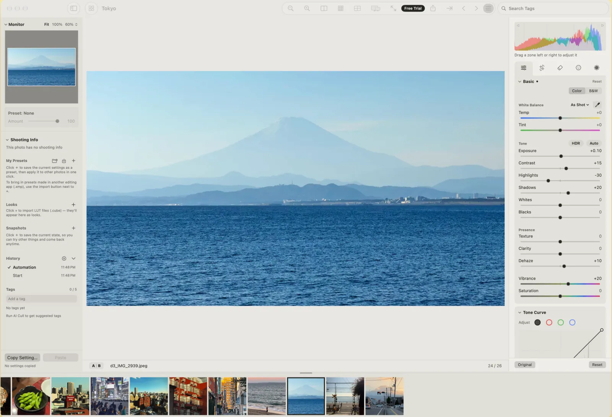

RAW
RAW는 찍은 카메라에 맞춘 색과 밝기로 열립니다.

카메라 프로필 132개
후지필름 · 소니 · 캐논 · 니콘 · 핫셀블라드 · DJI · 아이폰. 카메라마다 색과 밝기를 맞췄습니다.
앱 업데이트 없이 새 카메라
설정에서 새 프로필 묶음을 바로 또는 매주 확인하고, 다음에 여는 사진부터 적용합니다.
밝은 영역을 지키는 촬영 모드
캐논 하이라이트 톤 우선, 후지 DR200 · DR400으로 찍은 사진도 카메라에서 본 밝기로 엽니다.
흔한 RAW 형식은 모두
CR3 · CR2 · NEF · ARW · RAF · RW2 · ORF · DNG · 3FR · IIQ 등. 맥에서는 macOS가 아직 못 읽는 새 카메라는 안에 든 JPEG로 보정하고 그렇다고 알려 줍니다.
JPEG · HEIC도 같은 도구로
JPEG · HEIC/HIF · PNG · TIFF · WebP · AVIF도 RAW와 같은 슬라이더 · 마스크 · 프리셋으로 보정합니다.
폴더 그대로 여는 빠른 RAW 편집
무료로 받고 30일 동안 모든 기능을 써 보세요. macOS 26 이상. 윈도우는 10(64비트) 이상.